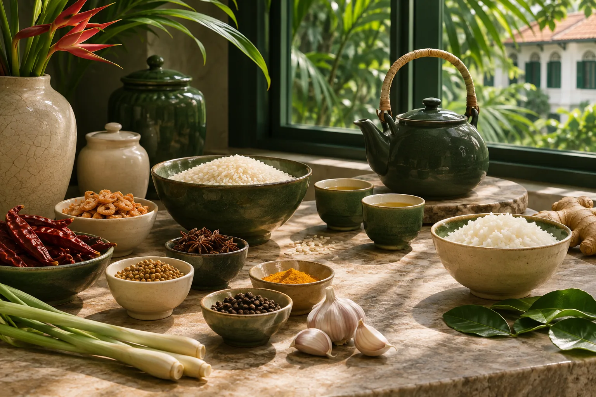

Food & everyday essentials
Food and beverage brands for everyday meals and meaningful moments.
Explore brandsFrom familiar food essentials to everyday innovations, Goh Joo Hin connects products and people across the region.

A SINGAPORE STORY
What began as a provision store on Rochor Road in the 1940s has grown into a business connecting products with customers across Asia Pacific.
Today, Goh Joo Hin works across FMCG, electronics, and health and nutrition, with a portfolio spanning food, lifestyle and healthcare.
Read the official storyWHAT WE DO
Three areas of business, connected by the everyday needs of the people and communities they serve.
Food and beverage brands for everyday meals and meaningful moments.
Explore brandsConsumer electronics and lifestyle products from a range of brands.
Explore electronicsHealthcare and nutrition products, including the Borsch Med range.
Explore wellnessA PORTFOLIO WITH PURPOSE
Explore a selection of product lines managed and distributed by Goh Joo Hin.
Brand names are shown for identification only. This concept is not an official brand website.
OUR JOURNEY
From a neighbourhood provision store to a diverse portfolio, each chapter builds on the last.
The Goh brothers began with a provision store supplying basic food necessities.
The New Moon brand was established, with abalone as its first product.
GJH's history identifies MILI as its second house brand.
Borsch Med was introduced, extending the portfolio into health supplements.
OUR REACH
GJH describes a distribution network across Asia Pacific, supported by warehousing and distribution capabilities.
More about GJHREGIONAL CONNECTIONS
LET'S CONNECT
Interested in learning more about Goh Joo Hin or exploring a business partnership?
Visit official contact pageYou will leave this independent concept and visit the official GJH website.